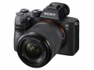

器材库 > 35mm画幅可换镜头数码相机 > α7 III

规格总览
产品类型
35mm画幅可换镜头数码相机
发布日期
2018-02-27
影像规格
影像传感器
Exmor R CMOS
有效像素
2420万
影像处理器
BIONZ X
静态图像格式
JPEG, RAW
短片尺寸
4K（QFHD：3840×2160）
防抖系统
5轴防抖
镜头和对焦
镜头卡口
Sony E
曝光控制
ISO感光度
ISO100-51200（静态图像可扩展至ISO50-204800）
连拍
10张/秒
取景器/显示屏
取景器
XGA OLED Tru-Finder 电子取景器
文件输入/输出
存储卡
SD/SDHC, SDXC
无线功能
Wi-Fi
电源
电池
NP-FZ100
机身规格
颜色
黑色
owen08692019-06-22 19:124.19 分
操作性 3.00功能性 5.00美观性 5.00趣味性 5.00耐用性 3.00性价比 3.50解像力 5.00色彩还原 4.00
匿名网友2018-10-07 11:444.81 分
操作性 4.50功能性 4.50美观性 5.00趣味性 5.00耐用性 5.00性价比 4.50解像力 5.00色彩还原 5.00
匿名网友2018-09-25 09:474.63 分
操作性 4.50功能性 5.00美观性 4.50趣味性 4.50耐用性 4.50性价比 5.00解像力 4.50色彩还原 4.50
产品图 / 样片
α7 III
评测 / 相关文章
- 详细内容 （存档）
- 微单多面手 索尼全画幅微单A7M3测评 （存档）
- 抢先玩 现场试用索尼A7M3 （存档）
- ［试用］索尼全画幅微单A7M3样片 （存档）
- ［资讯］索尼A7III等获CP+票选大奖 （存档）
- ［资讯］牙膏挤多了？ 速评索尼全幅微单A7III （存档）
- ［资讯］索尼A7M3发布会现场实录 （存档）
相关文章
- ［试用］微单多面手 索尼全画幅微单A7M3测评 （存档）
- ［试用］索尼全画幅微单A7M3样片 （存档）
- ［资讯］索尼A7III等获CP+票选大奖 （存档）
- ［资讯］全画幅新基准 索尼全画幅微单A7M3发布 （存档）
- ［资讯］牙膏挤多了？ 速评索尼全幅微单A7III （存档）
- ［资讯］索尼A7M3发布会现场实录 （存档）
- ［影像］索尼A7M3的美女人像记录 （原站已下线）
- ［资讯］索尼发布全幅微单A7M3新固件Ver.3.00 （原站已下线）
- ［资讯］索尼发布A7M3、A7RM3固件更新 （原站已下线）
- ［资讯］多项升级 索尼A7M3、A7RM3固件更新 （原站已下线）
- ［资讯］索尼A7III佳能EOSR和尼康Z7外观对比 （存档）
- ［资讯］索尼A7M3捧得EISA “年度相机大奖” （原站已下线）
- ［影像］带上索尼A7M3拍汉服小姐姐 （原站已下线）
- ［试用］我的索尼人像大片 （原站已下线）
- ［资讯］DxO公布索尼A7III传感器成绩 （原站已下线）
- ［资讯］索尼A7M III高感大PK （原站已下线）